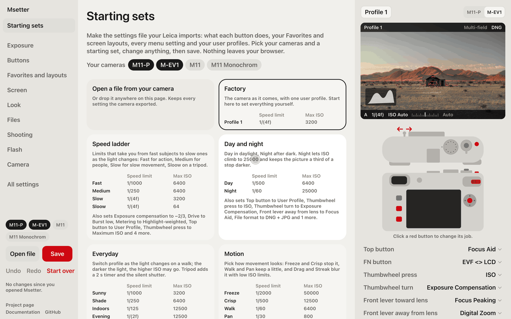

Msetter
Msetter is a free app for setting up a Leica M. Choose what each button does, put your Favorites and screen layouts in order, type your copyright and file names on a real keyboard, and set up your user profiles in columns you can compare. It saves a settings file for each of your cameras, which the camera loads from its card. Everything stays in your browser: nothing you open or make leaves your computer. Works on the M11, M11-P, M11 Monochrom and M-EV1, and on the Q3, Q3 43 and Q2 (experimental).
Try the app or get the Mac app, which also saves straight to a camera card.

Why
Typing on a camera is painful. Copyright, file names and profile names are spelled out one letter at a time with the direction pad.
Menus are deep and small. Most settings are a few levels down in menus made for a three-inch screen. A new camera takes hours to set up.
You keep starting from scratch. After a reset, a repair or a firmware update, on a new camera, and on one you borrow or rent, your setup is gone unless you remember it. A camera you lend out may come back with different settings.
The Leica FOTOS app doesn’t fix it. It changes some settings from your phone, one at a time, with little way to organize your buttons, Favorites or user profiles.
Two cameras drift apart. An M11-P and an M-EV1 have slightly different menus. Keeping them alike means going through every menu on both.
Profiles multiply the work. To change a setting everywhere, you change it in every user profile, one at a time.
Organize the Favorites menu
Favorites holds up to eleven menu items you choose, and five fit on one page. In Msetter, add items from a list and drag them by their number into the order you want. On the camera, items stay in the order you added them; Msetter writes the order you drag. Each user profile can have its own Favorites.


What pros do
- Short or empty. The status screen already has ISO, drive, white balance, file format and more.
- Choose things you need often that aren’t on the status screen: film style, JPG settings, self-timer, shutter type, perspective control.
- The most-changed item first, and five or fewer, so it fits one page.
Favorites sets in the app
Menu goes from the status screen straight to the main menu. For people who change everything from the status screen and the buttons.
Change the JPG look, the file type and the size without going into the main menu. For shooting DNG and JPG, often black and white to judge the light.
Set the self-timer, the silent shutter, straightening, noise reduction and brackets before a tripod shot.
Choose your screen layouts
While you shoot, the center button steps from the full picture through each layout. Leica calls them info profiles. On the M11 bodies they show in Live View and the Visoflex, on the M-EV1 all the time. In Msetter, switch on what each of the four shows (info bars, grid, histogram, horizon, clipping, focus peaking) and drag them into order. The button skips an empty layout.

What pros do
- Info bars only for everyday shooting.
- Peaking on Low and red, or off and one press away.
- Histogram and clipping in a separate layout, for checking hard light.
- Magnifying from a button, rather than automatically when the focus ring turns.
- On the M-EV1, exposure preview on all the time.
Screen layout sets in the app
The picture with only the exposure numbers; one press of the center button adds red peaking. For the rangefinder, opening Live View now and then.
A clear view to compose, a focus view with peaking, and an exposure view with histogram and clipping when the light is hard. For the M-EV1 or the Visoflex.
Level the camera with the grid and horizon, check exposure with histogram and clipping and nothing over the edges, then focus with peaking.
Change menu settings
Change the settings in the camera’s menus: film styles, file names, copyright, power saving and everything else. Each has a plain name and one line on what it does, and you type your copyright and file names on a keyboard instead of one letter at a time.

What pros do
- Picture review off, so the finder is free for the next frame.
- Touch off while shooting, so a nose can’t move the focus point. Off (LV mode) keeps touch for menus and pictures.
- Peaking sensitivity Low, so it marks fewer edges.
Sensible defaults
- Peaking sensitivity Low
- Picture review off
- Touch off while shooting
- ISO on Auto at M on the ISO dial, and on the M-EV1
Every new file starts with these. Change any of them in the app.
Set up user profiles for different subjects
A user profile is a saved set of settings: how slow the shutter may go, how high the ISO may climb, the color and the JPG look, what the buttons do. Switch profile and they all change together, so going from bright sun into a dark room is one press, not ten settings. A profile can’t turn the dials or the lens, so with the shutter speed dial on A it sets limits: the slowest speed before the ISO rises, and the highest ISO. A limit lets the shutter go slow but doesn’t make it, so slow speeds in daylight need an ND filter (dark glass on the lens). In Msetter each profile is a column, so you see what changes from one to the next. The camera holds up to six, switched from the status screen, the menu or a button.

What pros do
- One for each kind of work or subject, such as landscape and portrait.
- Few, often just one, holding file formats and a few shortcuts.
- One kept as a copy of the whole setup, to put it back after a firmware update.
- A black and white profile, so the screen and viewfinder show the picture in black and white.
- Each with its own Favorites and its own lens choice, handy for a lens without a code.
- Switched from the status screen.
Starting sets in the app
Everyday, Day and night, Street, Cinema, One speed and Speed ladder. Switch profile as the light changes.
Motion, Portrait, Landscape, Night, Events, Travel, and Kids and pets. One profile for each situation in it.
Color looks and Black and white. A JPG look in each profile; every picture also saves a DNG.
Factory: the camera as it comes, with one profile and sensible defaults.
Useful profiles
Sharp handheld, fast phone link
Silent shutter, no review, status light off
Vivid color, +1/3 EV, 3 s review
ISO up to 25000, −1/3 EV
Phone off, dim screens, off after 1 min
How to use it
- Pick your camera. Tap the one you own. Add a second to keep two the same.
- Start from your camera. On the camera, User Profile › Manage Profiles › Export Profiles, then open that
settings.lcsein Msetter. What you don’t change stays as it is. Or start fresh from a starting set. - Change what you like. Every setting has a plain name and a line on what it does, grouped in the sidebar. Each user profile is a column, so one change can go to all of them. Undo takes back anything.
- Save and import. Copy your camera’s own
settings.lcseto your computer first. Then copy Msetter’ssettings.lcseto the top of the card and choose User Profile › Manage Profiles › Import Profiles. With two cameras, each file comes in a folder named after its camera.
The camera doesn’t say when it skips a value, so check a few settings after your first import.